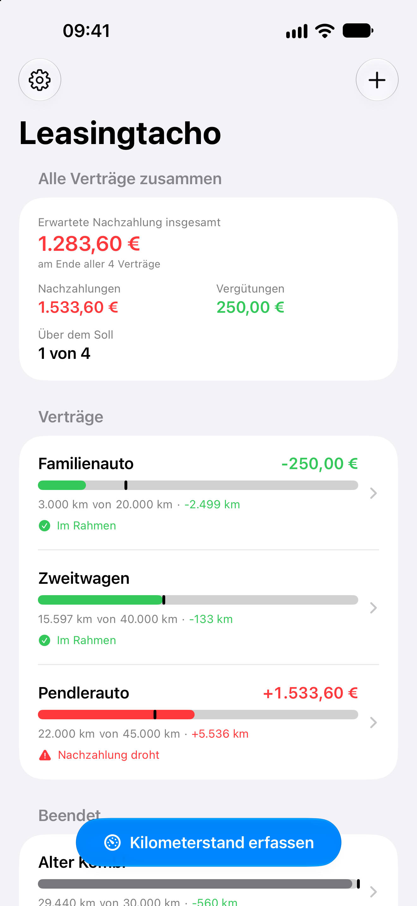
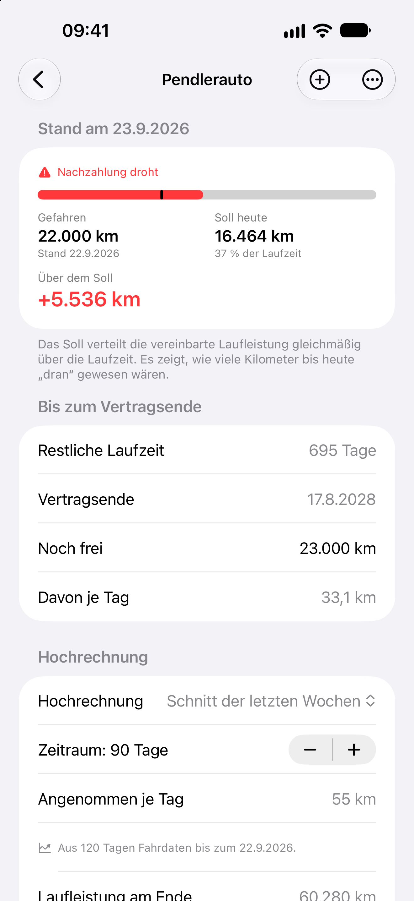

Leasingtacho
LeasingtachoPresseinformationen zu Leasingtacho
Kurzbeschreibung, Eckdaten, Funktionen, App-Symbol und Bildschirmfotos für Berichte über Leasingtacho. Fragen beantwortet der Entwickler gern per E-Mail.
Stand: September 2026
Kurzbeschreibung
Leasingtacho ist eine iPhone-App für alle, die ein Auto im Kilometerleasing fahren. Aus den Vertragsdaten und den abgelesenen Kilometerständen rechnet sie jederzeit aus, ob man über oder unter der vereinbarten Laufleistung liegt und was das am Vertragsende bedeutet: eine Nachzahlung für Mehrkilometer oder eine Vergütung für Minderkilometer, in Euro. Sätze, Freigrenzen und eine Obergrenze für die Vergütung trägt man so ein, wie sie im Vertrag stehen. Den Kilometerstand erfasst die App per Kamera, über Siri oder mit einem Tipp auf der Startseite. Die Daten bleiben auf dem Gerät und in der privaten iCloud – ohne Konto, Werbung oder Tracking.
Eckdaten
| Name | Leasingtacho |
|---|---|
| Plattform | iPhone ab iOS 18 |
| Sprache | Deutsch |
| Preis | Kostenlos laden und sieben Tage alle Funktionen testen, danach Vollversion als einmaliger Kauf in der App für 4,99 € – kein Abo |
| Kategorie | Finanzen |
| Anbieter | Christian Lehnert |
| Kontakt | leasingtacho@icloud.com |
| App Store | https://apps.apple.com/de/app/leasingtacho/id6815973549 |
| Webseite | https://leasingtacho.github.io |
| Erschienen | 28. September 2026 |
Funktionen
- Stand auf einen Blick: gefahrene Kilometer, Soll zum heutigen Tag und was das am Vertragsende als Nachzahlung oder Vergütung bedeutet.
- Hochrechnung auf das Vertragsende: aus dem Schnitt der letzten Wochen, seit Vertragsbeginn oder aus einer eigenen Jahresannahme – dazu die Rechnung für den Fall, dass kein Kilometer mehr dazukommt.
- Rechnet wie der Vertrag: Sätze für Mehr- und Minderkilometer, Freigrenzen als Freibetrag oder Grenze, Obergrenze für die Vergütung; nach dem Vertragsende die Schlussabrechnung.
- Verlauf und Ablesungen: Diagramm mit gefahrenen Kilometern, Soll und Hochrechnung; Ablesungen nach Monaten geordnet.
- Kilometerstand per Kamera: Kamera auf den Tacho halten und den Stand antippen; das Bild wird nur auf dem iPhone ausgewertet.
- Schnell erfasst: mit einem Tipp von der Startseite, über Siri, Spotlight und die Kurzbefehle-App oder aus dem Menü des App-Symbols.
- Erinnerungen: an fällige Ablesungen und auf Wunsch vier Wochen vor dem Vertragsende.
- Beliebig viele Verträge mit Gesamtübersicht über alle zusammen.
- Abgleich über iCloud: Verträge und Ablesungen liegen in der privaten iCloud der Nutzer.
- App-Sperre mit Face ID, Touch ID oder Gerätecode.
- Export: Ablesungen als Tabelle (CSV) und der aktuelle Stand als Bericht.
- Ohne Konto, Werbung und Tracking: Der Anbieter sieht keine Nutzerdaten.
Hintergrund
Bei einem Kilometerleasing erfahren viele erst bei der Rückgabe, wo sie stehen. Leasingtacho beantwortet die Frage schon unterwegs: Liegt man bei der bisherigen Fahrleistung über oder unter dem Soll – und was bedeutet das in Euro, wenn es so weitergeht? Entwickelt und angeboten wird Leasingtacho von Christian Lehnert.
Bilder
App-Symbol und Bildschirmfotos dürfen für Berichte über Leasingtacho frei verwendet werden. Die Bildschirmfotos zeigen Beispieldaten. Ein Klick auf ein Bild öffnet die Datei in voller Größe.





Alle Dateien
Die Bildschirmfotos sind PNG-Dateien mit 1320 × 2868 Pixeln.
- App-Symbol – PNG, 1024 × 1024 Pixel, ohne abgerundete Ecken
- Übersicht – die Startseite: erwartete Nachzahlung über alle Verträge zusammen, darunter die einzelnen Verträge mit Kilometerbalken, Abweichung vom Soll und Betrag
- Vertrag – die Detailseite eines Vertrags: gefahrene Kilometer, Soll zum heutigen Tag, Abweichung und was bis zum Vertragsende noch frei ist
- Hochrechnung – angenommene Kilometer je Tag, Laufleistung am Vertragsende und voraussichtliche Nachzahlung mit Rechenweg
- Verlauf – Diagramm mit gefahrenen Kilometern, Soll und Prognose über die Laufzeit, darunter die letzten Ablesungen
- Erfassen – eine Ablesung eintragen: Kilometerstand eintippen oder mit der Kamera ablesen, darunter die gefahrenen Kilometer seit der letzten Ablesung
- Ablesungen – alle Ablesungen nach Monaten geordnet, mit den gefahrenen Kilometern seit der vorherigen


Kontakt für Presse
Für Fragen, weiteres Material und Testberichte:
Für Testberichte gibt es auf Anfrage Codes für die Vollversion.